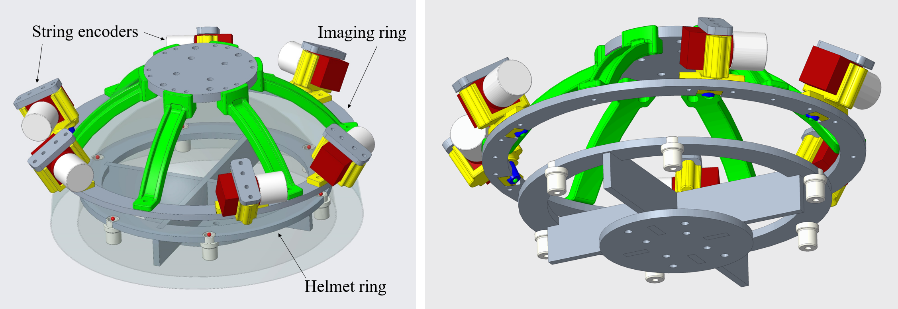
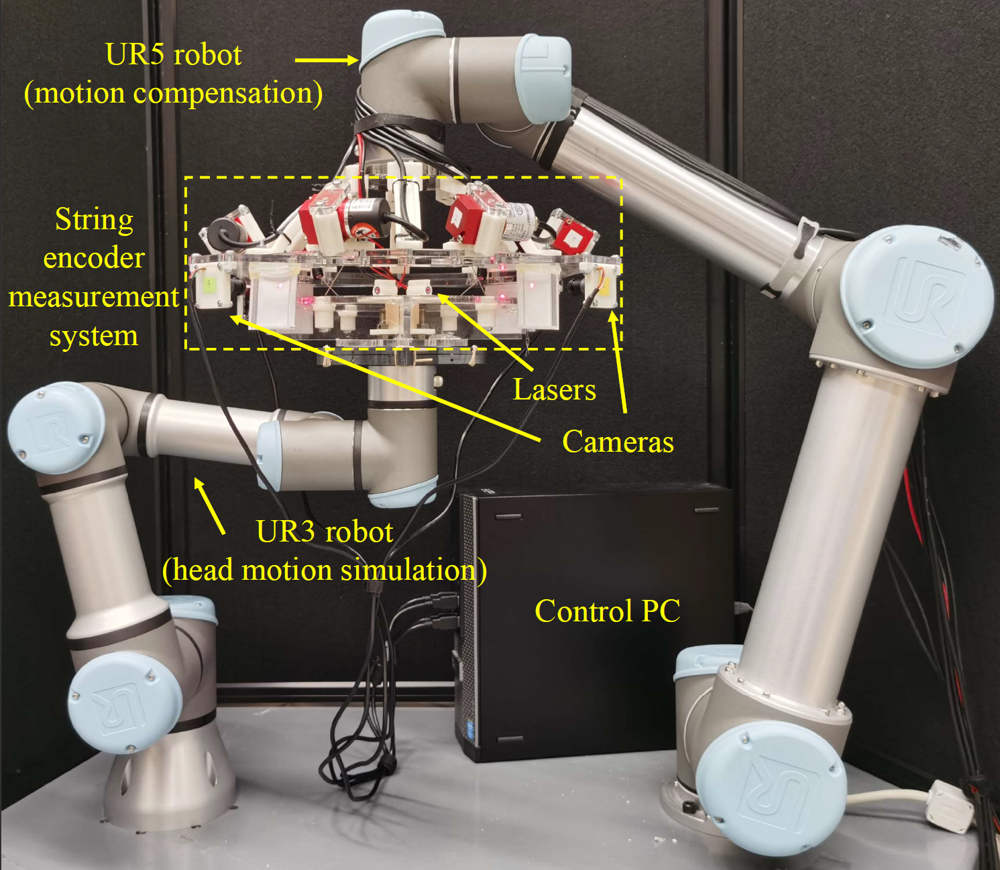
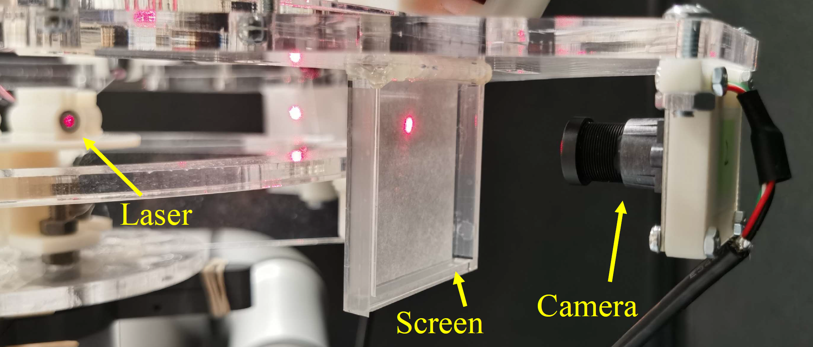

Imaging of human brain activity during locomotion can be studied by neuroscientists to help diagnose different motion disabilities. However, current attempts at performing such imaging either are not real-time or fail to allow natural movements from the subjects–they have to accommodate their motion to some spatially-fixed imager due to its weight (cannot be lighter than ~20kg). Therefore, we are designing a system where a robot would support the weight of the imager, and as the subject’s head moves around when walking on a treadmill, the robot would sense this motion and follow it with low latency, under a 18mm clearance.
The core of performing this motion compensation is naturally a measurement system that can provide robust and accurate readings of the pose between the subject’s head and the imaging device. We developed a mechanical measurement system with six draw-wire string encoders arranged in a Stewart platform configuration. This system can achieve a translational measurement accuracy of around 0.2mm for a ±10mm motion around the default configuration of the Stewart platform. Considering rotational effects, this accuracy stays within 0.5mm. I developed an automatic kinematic calibration process for the device to adjust for the small deviations from the designed parameters due to manufacturing. I also performed the extensive accuracy evaluation that led to the results above.

The next step is putting this measurement system to use in guiding synchronous motion of two entities. I connected two UR robot arms with this string encoder system, with a UR3 mimicking the human subject’s head and a UR5 mimicking the PET imaging device. The UR3 reproduces a trajectory of human head motion independently from everything else in the setup, the string encoder system senses this motion, the the UR5 uses the string encoder readings to move reactively. We call this process coarse motion compensation. Additionally, there is also a fine motion compensation process. In the actual PET imaging setup, this would be correcting for nonzero displacement of the string encoder system in the captured PET images. Instead of the radioactive setup with PET, we built an optical system for simulating a similar situation with four pairs of cameras and outward-facing laser diodes.


Junxiang Wang, Ti Wu, Iulian I. Iordachita, and Peter Kazanzides. “Evaluation of a motion measurement system for PET imaging studies.” 2022 IEEE Intl. Symp. on Medical Robotics (ISMR), GA, USA, 2022. ↩
Junxiang Wang, Ti Wu, Iulian I. Iordachita, and Peter Kazanzides. “Calibration and evaluation of a motion measurement system for PET imaging studies.” J. of Medical Robotics Research (JMRR), vol. 8, no. 01n02, 2023. ↩
Junxiang Wang, Iulian I. Iordachita, and Peter Kazanzides. “Method for robotic motion compensation during PET imaging of mobile subjects.” 2023 IEEE/RSJ Intl. Conf. on Intelligent Robots and Systems (IROS), MI, USA, 2023. ↩